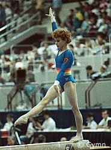

Dagmar Kersten (GDR)
1985 World AA Bronze
Medalist
1988
Olympic UB Silver Medalist

Medal Total
- Olympic Games: 1 Silver, 1
Bronze
- World Championships: 1
Silver, 3 Bronze
- European Championships: 1
Bronze
Dagmar was born on October 28,
1970 in Cottbus. She trained at SC Dynamo Berlin under famous coach Jurgen
Heritz (who also coached Karin Janz and Maxi
Gnauck).
Competition Results
- 1983
Children's and Youth Spartakiad: 1st AA, 1st V, 1st UB
(12-yr-olds)
1984
Jr.Friendship Tournament (Druzhba): 2nd Team, 24th AA, 8th V
-
- 1985
- Cottbus International: 4th AA, 1st V
- DTB Cup: 1st AA, 2nd FX, 4th V, 6th UB, 6th B
- Dynamo Spartakiade: 2nd AA
- European Championships: 5th AA, 3rd V,
6th B
- GDR-HUN Dual Meet: 1st Team, 1st AA
- GDR-NOR-SWE Tri-Meet: 1st Team, 1st AA
- World Championships (Montreal): 3rd
Team, 3rd AA, 2nd UB, 3rd V, 6th FX, 8th B
-
- 1987
- DTB Cup: 3rd AA, 1st UB, 2nd FX
- GDR Championships: 1st AA
-
- 1988
- China Cup: 3rd AA
Cottbus International: 8th AA, 3rd V, 3rd B, 6th FX
- GDR Championships: 1st AA, 1st V, 1st UB,
2nd B, 2nd FX
- GDR Olympic Trials: 1st AA
- Moscow News: 5th AA, 3rd UB, 3rd B, 8th
FX, 9th V
- Olympic Games: 3rd Team,
2nd UB, 6th V
-
This page was last updated on July 09, 2005 and was last updated on August
25, 2007.
© Gymn Forum
-